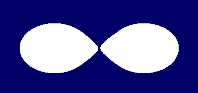

(Note: most of the pictures this year were images of molecules that I animated using a program called RasMol, along with a Perl script to drive it and make the molecules rotate. You probably don't have RasMol on your computer, and if you do, you probably don't have my script. So in the following I've substituted static images, but these link to the corresponding PDB files, which can be fed to RasMol (or my script, pmol) if you want to play with the images yourself. You can find many more PDB files on the net if you're interested.)
Two years ago, in my first State of the Onion speech, I used sounds.
[I play ``You will be absorbed.'']
Last year, in my second State of the Onion speech, I used pictures.
Those of you who heard or read that speech will recall that I threatened to use smellovision this year. So guess what.
[I hold up an onion.]
Here's an onion. Allow me to cut it here in front of you.
[I cut the onion.]
They laughed, they cried...
And just this last week, they evacuated a federal building in Washington, D.C. because people were getting sick from some mysterious toxic fumes. Guess what sort of toxic fumes they turned out to be?
[I wave the onion.]
The active ingredient in onion, the one that makes you cry, is thought to be something called 1-propenyl sulfenic acid. In chemistry shorthand, that looks something like this:
CH3-CH=CH-SOH
You may be wondering what this has to do with programming. Other than the fact that reading other people's code sometimes makes you want to cry.
The point I would like to make today is that I think the Perl community has ``good chemistry''. We often talk about groups of people having ``good chemistry''. Especially when the group consists of two people who suddenly like each other very much.
Unfortunately, what the phrase ``good chemistry'' usually means is that we don't understand what's making the chemistry good. Chemistry is a mystery to most of us. It's like saying ``It's all Greek to me.''
There's one little problem with that saying. I can read Greek. I learned some classical Greek at Seattle Pacific University as part of my declared major, Natural and Artificial Languages. That was just an excuse to mix up linguistics and computer science. You probably know that already.
What you may not know is that I started off college with a double major in Chemistry and Music. If I can't say, ``It's all Greek to me,'' neither can I say, ``We have good chemistry.'' At least, I can't say it without wondering what it means. I have some ideas about what good chemistry is, and that's what I'm going to talk about today.
So to start, here's one of our favorite molecules.
This is caffeine. Good chemistry in this case means keeping you awake through my talk.
Actually, you should find this talk interesting if you've ever had anything to do with chemistry. And if you are lifeform that is not based on chemistry, I apologize in advance. Well hey, this'll talk will probably get slashdotted, and who knows how many AI projects are reading slashdot these days?
I'm also tempted to apologize for the fact that this talk is organized organically. But I won't. It's funny, but the way the English language is going, ``organized organically'' is becoming an oxymoron. You wouldn't think so, since the two words are based on the same root. But our world today has two opposing views on the goodness of hierarchy, and each of these words has fallen down on opposite sides of the fence. Modern life is organized, while postmodern life is merely organic.
But I'm not here to talk about postmodernism. I tried to do that last spring, and afterwards I was thoroughly deconstructed by the deconstructionists for attempting to deconstruct deconstructionism. At least, that's the construction I put on their construction of it. I was talking about postmodern culture, and they thought I was talking about postmodern literature. Not at all the same thing!
Anyway, I'm enough of a postmodern that if you tell me my talk is organized, I'll be insulted, but if you tell me my talk is organic, I'll be complimented.
If you tell me my talk is orgasmic, I won't believe you.
At least, not until I light this candle.
[I wave around an oversized votive candle.]
I ordered this candle a couple of days ago over the Web from a company called Realm Fragrances. They hold the patent on fragrances containing human pheromones. This candle purports to contain human pheromones.
[I light the candle.]
Come on baby, light my fire...
If you didn't think Perl was sexy before, you will now.
(Whether you want to or not.)
Better programming through chemistry...
Actually, I just read another news item a couple of weeks ago that said that some study had just shown that the recently discovered vomeronasal receptors in the human nose are, in fact, vestigial, and don't have neurons to them in adults. Ah, well. Studies are a dime a dozen. If you try hard enough, you can even find studies that prove cigarette smoking is bad for you.
Speaking of studies, a bright fellow by the name of Ted Shieh has been studying the demand for programmers of various kinds. He's been analyzing the web site www.dice.com, where corporate America advertises openings for high-tech jobs, about 132,000 as of today. This is what is known to pollsters as a large statistical sample.
Of course, to a chemist it would be a very small statistical sample. Chemists aren't impressed until you start using exponential notation. You know, Avocado's number, and all that.
Anyway, here's a chart that Ted came up with. It charts the number of job listings on dice.com that mention any of the top programming languages. The chart shows growth over the last six months.
Perl is the yellow line.
Allow me to point out this spot in April when Perl passed up COBOL.
Of course, passing up COBOL is no big deal these days, since demand for COBOL seems to be trailing off, for some strange reason.
Perhaps more to the point, notice this spot in July when Perl passed up Visual Basic.
Finally, notice this spot way down in the corner, where Python finally got off the baseline. A little.
In the race to the millennium, it looks like C++ will win, Java will place, and Perl will show. Some of you no doubt will wish we could erase those top two lines, but I don't think you should be unduly concerned. Note that both C++ and Java are systems programming languages. They're the two sports cars out in front of the race. Meanwhile, Perl is the fastest SUV, coming up in front of all the other SUVs. It's the best in its class.
Of course, we all know Perl is in a class of its own.
Our real competitor according to this chart is JavaScript. They're coming along strong in fourth place. That's not terribly surprising, considering that JavaScript has taken over a lot of the role in the browser that everyone originally thought Java was going to fill by itself.
This chart actually lies a little, since it's not scaled by the number of jobs listed on dice.com. And that number has been doubling once every year or so. So all these lines are a little too optimistic.
Here's another chart from Ted that corrects for that.

In this chart, all the languages add up to 100%, so we can see what the relative demand has been over the last six months.
See the pinkish band at the top. Imminent death of COBOL predicted.
Look at these bottom two bands. Of course, we don't want to be fooled by the fact that they're next to each other, but I do think that Java is growing primarily at the expense of C++. And maybe COBOL.
Meanwhile, both Perl and JavaScript are chewing into Visual Basic, and maybe COBOL. Nobody else on the screen is doing any chewing. The thin blue band at the top is Smalltalk. If you look really closely at the black line above that, it gets a little thicker in spots. That's Python.
There's another way in which these charts might be lying. They don't tell us how many jobs there actually are out there.
Perhaps there's no demand for Python programmers simply because Python programmers are really easy to find without using dice.com.
Some of you look dubious.
On the other hand, maybe the demand for Java programmers is driven entirely by hype, and there are in reality no Java programmers out there.
Well hey, maybe that's why they cancelled JavaOS last week.
I really do have a hard time believing that COBOL is dying. Maybe the demand is going down for COBOL programmers because there are billions of COBOL programmers beating down the doors of businesses looking for jobs. Maybe the demand was artificially high because of Y2K fixups. I dunno. Maybe someone did a study that proves COBOL is bad for your health.
Well, enough disclaimers. As long as the demand for Perl keeps going up, we're doing something right. You can call it buzz or you can call it brownian motion, but let's keep doing the good chemistry.
So, all right, what is good chemistry. First of all, good chemistry is a little bit messy. Good chemistry is not the same as perfect chemistry. If you want perfect chemistry, here's an example.

That's a bit of diamond crystal. Diamonds may be a girl's best friend (next to pheromone candles), but they're actually rather boring. Crystals are pretty, but they just kind of sit there, not doing much of anything.

Pearls are much more interesting. They're produced by living oysters, after all. They consist of alternating layers of calcium carbonate crystals and an organic binder known as conchiolin. (I suppose it must have something to do with conches.) These alternating layers are what make the pearl irridescent. Calcium carbonate is, of course, a compound of calcium, carbon, and oxygen. Conchiolin is a mixture of various proteins and polysaccharides, rather like your fingernails.
In other words, pearls are complicated, and a little bit messy.
I think good chemistry is complicated, and a little bit messy. I suppose one of the reasons I think that is because, when I was young, I had a chemistry set.
Back in those days, men were men, boys were boys, and chemistry sets were Chemistry Sets. Chemistry sets had real test tubes, and a real alcohol burner, and real chemicals. Dangerous chemicals. The bottles had warnings like, ``Eat thou not of this. If thou eatest of this, thou shalt surely die.'' Or something like that.
Sure, you could do all the fun experiments turning things red or blue or clear again, but you could also do the things that really matter to a junior high boy. You could make things that stink. You could make things that explode.
Of course, they didn't give you everything you needed for that in the chemistry set. You were expected to go down to the drug store and buy your own potassium nitrate, otherwise known as saltpeter. Saltpeter is cool stuff, for a junior high boy.
One day I mixed some saltpeter with sulfur and sugar. You're all familiar with sugar at the macroscopic level. Here's a picture of a sucrose molecule.

Nowadays it seems sort of a shame to use such a pretty, not to mention tasty, molecule merely for fuel, but that's what I did. I discovered a couple of things. First, I discovered that this mixture makes an excellent stink bomb. As you can see here, the sugar molecule has lots of hydrogens. When you burn the mixture, apparently the sugar donates hydrogen and the sulfur donates, well, sulfur, producing hydrogen sulfide in copious quantities.
I also discovered that I should not light off stink bombs in the basement. Besides smelling like rotten eggs, hydrogen sulfide is rather poisonous in large quantities. Guess who had just manufactured large quantities of it. In the basement. Fortunately, no one else was home at the time, and I had the house aired out by the time anyone came home. But I didn't know that, so all morning, the door to the basement had a sign that said, ``If thou goest down here, thou shalt surely die.'' Or something like that.
Maybe someday I'll talk about the rockets. Rocket science is messy too.
By the way, I'm showing you this molecule courtesy of a program called ``RasMol''. No, it's not written in Perl. It's written in C. Sorry.
Believe it or not, there really are a few good programs out there written in C. You know, rn... patch...
Maybe perl...
But in my defense, allow me to point out that I'm running the animation by piping commands to RasMol from a Perl script. And that's as it should be. We don't have to do everything with Perl. We just have to be in control.
Actually, I'm not a control freak. I think I'm more of a chaos freak.
Well, okay, I'm really a controlled chaos freak. Here's some Wallace and Gromit:
[I play ``Everything seems to be under control!'']
Seriously, Perl doesn't have to be in control. It just likes to be in the middle. Kind of like those carbon atoms there in sucrose. Or here.
This is a strand of polycyanoacrylate, more commonly known as superglue. In the middle of things is where a glue language belongs. The world will always have interstices, and we'll always be needing to put glue into them upon occasion. We're in the business of developing better glue molecules. So don't fret yourselves about whether Perl is doing better or worse than some other language in the job market. We're not in that kind of a race.
We do not define Perl as an improved version of some other language. Nor do we have to define Perl as the next universal language. We're not trying to make Perl a better language than C++, or Python, or Java, or JavaScript. We're trying to make Perl a better language than Perl. That's all.
So, what do you want in a glue language?
Well, you have to have the basics, of course. The BASIC programming language was called BASIC for a reason, after all. This superglue molecule shows us a nice bit of linear programming along the backbone. It's a bit obscured by all the cyanide groups. I find it a bit odd that surgeons use superglue because it's non-toxic. Hydrogen cyanide is what they use in the gas chamber in California. Go figure.
Here's a simpler example of linear programming, without all the cyanide on the side.

This is decane, a simple linear hydrocarbon. We don't use it for glue. I am undoubtedly burning some decane in my candle here, since parafin is largely made up of long linear alkanes. If we chop this molecule in half, we get a shorter script. Er, program. Er, molecule.

This is a simple molecule of pentane. We don't use it for glue, either. Mostly we burn it up, because pentane is a basic ingredient of gasoline. But certainly not the only ingredient. You'd never want to burn 100% pentane in your car. 100% pentane is the very definition of 0 octane gas. To get 100 octane gas, we have to add a branching capability to our language.
This molecule defines the standard for 100 octane gas. Not suprisingly, it's called octane, or at least one variety thereof. It's official name is 2,2,3,3-tetramethyl butane, which is a really stupid name, because the methyl groups added onto the side of the butane are exactly equivalent to the methyl groups at the ends of the butane. I think it should be called 1,1,1,2,2,2-hexamethyl ethane. But that's not how chemical names officially work. You have to pick the longest carbon chain you can, four in this case, even if thereby you deny the basic symmetry of the molecule. It's kind of like the standard definition of regular expressions, where you always have to match the longest string. Of course, lots of people call it hexamethyl ethane anyway, since real people really do believe there's more than one way to do it. People use minimal regular expressions now too, thanks to Perl. I'm not sure what the octane rating of Perl is. Perl doesn't make your engine knock, but it's not very expensive either.
Here's a cool molecule, if you're into explosions. Or branching structures.

It seems like whenever you run into a cool explosive, you tend to find nitrogen involved, whether you're talking about potassium nitrate, or nitrogen triiodide, or in this case glyceryl trinitrate. More commonly known as nitroglycerin. Also more commonly used as a heart medication than as an explosive. Still, to a junior high boy, it's dynamite.
Of course, not only do we need branching structures in our programming language, but we need various looping constructs.
That's TNT, trinitrotoluene, frequently confused with dynamite. But it takes a detonator to get TNT to explode. You can take pure TNT and hit it with a hammer, and nothing will happen. Don't try this with dynamite. It will ruin your day, if not your hammer.
TNT is based on toluene, which is a benzene ring with one methyl group. People used to think of benzene and other aromatic molecules as having double bonds that alternated rapidly with single bonds. But it turns out that all the extra electrons are usually out in a cloud on either side of the ring, which hangs a great big negative charge out there, which is why many potent biological molecules use them. Loops are a powerful part of Perl too. That's why there are so many different kinds of loops in Perl.
And there's more than one way to do it in chemistry as well. Interestingly, you can substitute nitrogens for carbons and get aromatic loops as well. You can always tell the aromatic loops from the non-aromatic loops because the aromatics don't seem to have enough hydrogens attached to the carbons or nitrogens. Perl has other ways of telling loops apart. Here's a molecule that will drive you loopy.
This is histamine. Many of you are intimately familiar with histamines, because as loops, they program you to sneeze repeatedly. Some of you may be producing histamines because of the fragrances in this candle. Some of you may have gone so far as to program your body with an antihistamine such as Benadryl.

Obviously, Benadryl is the more powerful program because it has two loops instead of one.
Alternately, you can view it as the reuse of modules. Though it looks more like cut and paste to me. For real reusability, of course, you need to study catalysts, and their proteinaceous cousins, enzymes. Most enzymes are just chock full of loops, branches, objects, interfaces, and what have you. Many reusable enzymes can be downloaded from the CDAN. That's the Comprehensive DNA Archive Network, replicated in the nucleus of each of your cells.
Just a few more loops. I like loops a lot.

Here's another dual-use explosive, cyclonite. It doubles as a rat poison. Rat eats it, KABOOM! In this case you can see that the ring is not aromatic, so all the carbons connect to four things and the nitrogens to three things.
One thing we haven't figured out how to do in Perl is three-dimensional loops. Hey, Sarathy, let's put this on the Todo list:

This is cubane. Not aromatic. See all the hydrogens.

This is dodecahedrane. Also not aromatic.

And of course, buckminsterfullerene, which is aromatic, for some definition of the term. Note that there are no hydrogens at all. Buckyballs are a recently discovered form of pure carbon, like graphite and diamond. Making organic molecules without hydrogen is kind of like writing Perl without dollar signs. Which oddly enough you will be able to do easily, now that we're getting lvalue subroutines, another recent discovery.
I have a gazillion other molecules I could show you, but I'd like to go back and explain a little more personal history. After all, the theme of all these keynote speeches has been that you can't really understand Perl without understanding Larry. There is an unfortunate corollary, however. Since it's not possible to understand Larry, it's not possible to understand Perl either.
But that's okay, because Perl is a bit like those early chemistry sets. You didn't really have to understand what you were doing in order to do interesting things. You might blow yourself up, but more likely, you'd have a great deal of fun.
I remember a lot more about my chemistry set than I do of high school chemistry. In fact, about the only thing I learned in high school chemistry was Avocado's, er, Avogadros number, 6.02 times 10 to the something big. But between my chemistry set and Avogadro's number, I managed to persuade myself to major in Chemistry in college.
Among other things.
My first year at college, I took inorganic chemistry. Inorganic chemistry is mostly about weighing things. I spent an awful lot of time trying to get the scales to read what they were supposed to read. The error bars on my graphs were always rather too large.
I remember wandering into the lab next door, and being shocked to find a
jar of potassium cyanide sitting in the cupboard. I suppose that's when it
first occurred to me that we really do expect people not to be idiots. For
example, we really do expect people not to call
system("rm -rf *").
I also learned something about ambiguity that year. I was leafing through a chemistry book when I saw an entry that said, ``periodic acid''. ``Huh,'' I said. I should really have figured it out sooner, since I knew about perchloric acid. Periodic acid is not acid that's periodically acidic, but rather it's per-iodic acid, based on iodine, just as perchloric acid is based on chlorine.
Even if periodic acid isn't, the periodic table is. We studied the periodic table of the elements a lot in inorganic chemistry. There's a reason it's called periodic, and it also has to do with the fact that iodine is like chlorine, and fluorine, and bromine. Sort of.

You know, if this were a computer language, people would say it has too many ways to do the same thing. It has too many features that work too similarly, and at the same time it's missing key features of higher abstraction that would really help an MIT grad student. Elements do multiple inheritance of properties, which is evil. Strong typing is not enforced. Nothing should be made of carbon, because organic programming gives you too many ways to get into trouble. There are too many metals, too many gasses, and not enough semiconductors like silicon. There ought to be more elements like carbon. Everything should be made of carbon atoms. Silicon is only good for sand, it should be removed. If this were really object-oriented, electrons and quarks would have the same interface as atoms and molecules. There's not enough encapsulation of electrons in the metals. There's too much encapsulation in the lanthanides and the noble gasses. And why the heck do we need so many different noble gasses anyway? They don't do anything! Throw 'em into that big hole at the top of the chart. And don't get me started on isotopes!
The periodic table is a mess. It should be redesigned.
That's what I learned in inorganic chemistry. My second year I took organic chemistry. That's the same year I started working as a computer programmer. Before that I was working as a projectionist.
[I look at the projection screen in the auditorium.]
You know, I'm still a projectionist. You can never entirely stop being what you once were. That's why it's important to be the right person today, and not put it off till tomorrow.
Organic chemistry is way cool, but there's a problem. You can always tell who is taking organic chemistry on campus. That whole second year, whenever I wandered into the computer center, I was told I smelled like a goat. (In retrospect, I would rather have smelled like a camel.) Anyway, the odor of everything from ether to isoamyl acetate was oozing out of my pores, and it took several weeks for it to wear off after the school year was out. At least, so I'm told. I couldn't smell much of anything for the rest of the summer.
But I enjoyed organic chemistry. We did both synthesis and analysis, but I think I enjoyed the synthesis more. Not too surprising, given who I am. I've never stopped being a synthesist.
Actually, I think chemistry strikes a good balance between synthesis and analysis, between holism and reductionism. As a synthesist, I tend to be scared of reductionism. You know, behavior can be reduced to biology, biology can be reduced to biochemistry, and biochemistry can be reduced to chemistry. Chemistry, in turn, can be reduced to physics. And physics, of course, can be reduced to theology.
Well, hey, that follows logically from the fact that physics can be reduced to math.
Ask most any mathemetician about God, and he'll say something like, ``We can't prove that God exists. However, we can prove that if God does exist, he's pretty good at math. In fact, we can prove that even if God doesn't exist, he's still pretty good at math.''
Personally, I think God is pretty good at both analysis and synthesis. I like the periodic table the way it is, thank you.
Here's an ester I synthesized, called isoamyl acetate.

You know this better as the smell of banana.
[I eat a banana.]
You might think bananas are relatively harmless, but after the quarter was over, I took my precious isoamyl acetate to my dorm room. During an all-dorm water fight, I had the bright idea of turning another floor of the dorm into banana heaven, so I got out my stash of banana perfume. One of my floormates grabbed it from me, went down to the other floor and threw it in someone's face, who proceeded to almost asphyxiate. Fortunately, he didn't, so no one ever asked where the banana perfume came from, and I had a close escape from the law of unintended consequences. But one of the consequences was that chemistry lost a bit of its glamour for me that day. Eventually I realized I didn't want to be a chemist. By my third year in college, I had changed my major to Premed, but I didn't really want to be a doctor either. It was just an excuse to take all the science courses I wanted.
But another consequence was that I realized that, whenever you synthesize something, people will find a way misuse it. People misuse Perl too--if you can call spammers people. Perl is the language of choice for network abuse. That doesn't mean Perl isn't a net win for the world. In the long run, I suspect more lives will be saved by nitroglycerin than will be destroyed by it. But Alfred Nobel's brother was one of the people destroyed by it. I'd rather not be destroyed by Perl.
Chemistry is a serious subject. Sometimes it's a matter of life and death. Here's vitamin C.
Now that's what you call mission critical programming. Here's vitamin B-12.

Vitamin B-12 is the proof that cobalt is necessary in your diet. Cobalt is the pinkish atom in the middle attached to five nitrogens and a cyanide group. In this context, cyanide gives life rather than taking it away. Context is everything in chemistry, just as it is in Perl.
Even when chemistry is not life and death to people, it's life and death to bacteria and insects. Here's malathion.
One year when my wife was pregnant with one of our kids, we were camped here near Monterey, and we got sprayed with malathion.
That kid turned out strange. But then, all my kids turned out strange.
Strange and wonderful. Kind of like Perl.

Here's a naturally occuring insecticide. An organic pesticide, if you will. It occurs naturally in the leaves of the species Nicotiana Tabacum. Obviously, since nicotine is a natural insecticide, it can't be bad for you, can it?

This molecule with the Mr. Yuk chlorines is DDT, still used in many parts of the world, but not here. We thought it was death for insects, but it was also death for birds. The law of unintended consequences again. But where DDT is still used, millions of people are alive who would have been dead of malaria.
To an organic chemist, pesticides are organic.
To an organic farmer, pesticides are not organic.
That's okay, you can make Perl mean opposite things too. I expect people to make Perl mean opposite things, both good and bad. That doesn't take anything away from the central meaning of Perl. To explain the central meaning of Perl, let's look at the central meaning of the word ``organic''.
If you go back to ancient Greek, the noun organon already meant what we often mean by ``organ'' today; that is, a functional subsystem of your body. But organon could also mean an implement, or a tool, such as a surgical instrument. The related adjective organikos meant ``serving as a tool, or engine.'' There you have it. If Perl is a tool or engine, then you're doing organic programming by definition.
Interestingly, not only could the Greek word mean a surgical instrument, it could also mean a musical instrument. So music is also organic. Perl and music have a lot in common. Maybe next year I should talk about music. After all, I majored in Music too.
If you're really lucky, I'll forget to bring my violin.
Somewhere between music and chemistry there's got to be a joke about organ grinders, but I'll be a monkey's uncle if I can see it.
Anyway, now you know that the ancient Greeks thought their tools were organs, or their organs were tools.
Hmm, maybe I'd better not expand on that.
Actually, as a linguist, I don't believe in etymological meanings. The meanings of words depend on many contexts, but all of the real contexts are in the present language, and true etymology is only in the past. On the other hand, part of the current context is what you think the etymology of a word is. That's why people like me keep trotting out etymological arguments, even though they're relatively meaningless, not to mention wrong half the time.
So, what do I mean when I say I program organically? The central meaning of ``organic'' these days derives from the organs of the body. It means doing business naturally, the way that your body does business, complicated and messy, with lots of interconnections and ramifications and stuff we don't entirely understand yet. But that's the way nature does business.
On the basis of that, the organic farmers can tell you that it's unnatural to use pesticides, because we don't want it to be part of us, while organic chemists can tell you that it's natural to use carbon-based chemistry, because what we're made of. They're both right, in their way.
Likewise, Perl is designed to let you program naturally. Whatever you think natural means.
Perl culture must also be organic. That means that each bond in the molecule of Perl culture must work the way it's supposed to. There is no central atom to the Perl molecule. Maybe I'm a heavy cobalt atom hidden off somewhere in the middle, but the whole molecule is what works. The molecule has what is called tensegrity: the proper balance of pushes and pulls to maintain its integrity. In terms of our culture, it means that sometimes we attract each other, and sometimes we repel each other, but more importantly, it means that we're there for each other there to attract or repel as necessary. Look for balance in your attractions and repulsions. Look for equilibrium.
What's good for the Perl molecule is good for the Open Source molecule. Last year I gave you a picture of the Open Source world taken from physics.

This is Rocheworld, where two gravitationally bound bodies approach each other. It's a curious coincidence that the word rapp-roche-ment has a ``roche'' in the middle. The picture was intended to indicate the approach of the open source world to the commercial world. I wondered at the time whether things would become unstable if the two worlds got even closer together. That's what would happen in a real Rocheworld. But gravitation turns out to be an incomplete model for what's really going to happen. Gravity is never repulsive, and can only be balanced by centrifugal force, but the combination of electromagnetism and the strong force make atomic bonds that can push as well as pull. So I think that the open source folks and the commercial folks will find the right balance. Here's a sample molecule.

This is the molecule known to most of you as acetylene.
If we're to make this correspond to last year's picture, then this hydrogen atom on the left is named Richard, and the one on the right is named Bill. (Hmm, they seem to be circling each other. How appropriate.) [Well, they were circling in my talk, anyway.] This carbon atom on the left is all the open source folks that are trying to cooperate constructively with commercial folks, and this other carbon atom is all the commercial folks trying to cooperate with open source folks. The bond in the middle is simultaneously the strongest bond and the weakest bond. It's the strongest bond, because it's a triple bond. It's also the weakest bond, because it's a very energetic bond, and could be broken by outside forces.
But not by inside forces.
Let me be specific. Some folks in this room are extremely leary of Bill. Others are extremely leary of Richard. These people tend to be leary not only of the opposite hydrogen, but also the opposite carbon. They are supplying the repulsive forces, because they fear the opposite extreme.
At the same time, there are lots of good people who are actively supplying the attractive forces. Nobody has enough power to crush the two carbons together. Nobody has enough power to tear them apart. They're in a metastable state. They have tensegrity. It's my hope that the open source movement achieves this kind of tensegrity.
That being said, acetylene is flammable. If it is abused too much, it can explode. I only ever had one unanticipated explosion when I was doing chemistry in my basement, and that was when I was generating acetylene. I was an idiot, and was generating it in a small glass jar. Don't try this at home. Fortunately, it was a very small glass jar, and I was already wearing glasses at the time. I was shaken but unhurt. I don't play with acetylene much any more, because it is rather touchy stuff. So maybe, if you're thinking about starting a war between the open source folks and the commercial folks, you should think again. First of all, you'll be fighting against a lot of good folks, and you'll probably lose. Second of all, you might win, and the world will be split up into separate atoms. Maybe that's what the hydrogens on the end want, but the carbons in the middle would really like to stick together and make something useful.
If we try hard enough, maybe we can make open source into something stable in the middle. Here's the funniest molecule I saw in my research.

It's called bromochlorofluoroiodomethane. I have no idea what it's good for (or more likely, bad for), just as I have no idea where open source culture is going. But I think of open source as the single carbon in the middle, holding steady the separate interests of these four different atoms, bromine, chlorine, fluorine, and iodine, which to my mind represent the domains .gov, .edu, .org, and .com. If we work things right, maybe we can balance things tetrahedrally so that, for instance, the .govs and .edus keep the .coms and .orgs from destroying each other, and vice versa every whichaway.
I guess I really am an optimist. A paranoid optimist, true, but an optimist nonetheless.
Of course, this picture is also an oversimplification. The true picture is much more organic. Whatever that means.
I leave you with some vitamin E. Like many of the most useful molecules in biology, it is self contradictory. It has a strongly polar end, and a strongly nonpolar end. It has a funny shape. It smells a little odd. It looks like it was designed by a committee. It's sort of a molecular camel, if you will.
Nevertheless, it's a useful beast. Just as each of those atoms is necessary to the proper functioning of the molecule as a whole, the molecule as a whole is necessary to the functioning of each of you sitting here today. Each of you in turn can be a vitamin that helps keeps the Perl community healthy.
And our collective hope is that the Perl community is one of the vitamins that will keep the world healthy.
The key to equilibrium is to balance out all your reactions.
Don't overreact. Don't underreact.
Don't overact. Don't underact.
But do act. And act passionately, with balance.
I wasn't going to talk about rockets. But I want the Perl community to behave like a rocket engine. What's the point of rocket science? It's to see how big of an explosion you can have without blowing your rocket chamber apart. I want to have the maximum amount of passion in the Perl community without blowing the community apart. So have a little tolerance for other people's passions, even if they don't match your own. Let's balance our passions.
``Churn, baby, churn,'' as Guy Kawasaki told us earlier today. It's the only way we'll jump to the next curve. It's how we'll let a thousand flowers bloom.
I feel like I'm still playing with my chemistry set here, and I still don't know what I'm doing entirely. Doubtless there will be more cool stinks and explosions this year, just as we've had our fair share of stinks and explosions in the last year. But face it, we've made many more good smells than bad ones. And the explosions haven't done much besides ruffle a few feathers.
So let's keep doing organic chemistry this year. It's good chemistry, even if we do smell like a camel occasionally.
Thanks for letting me douse you with weird chemicals today.